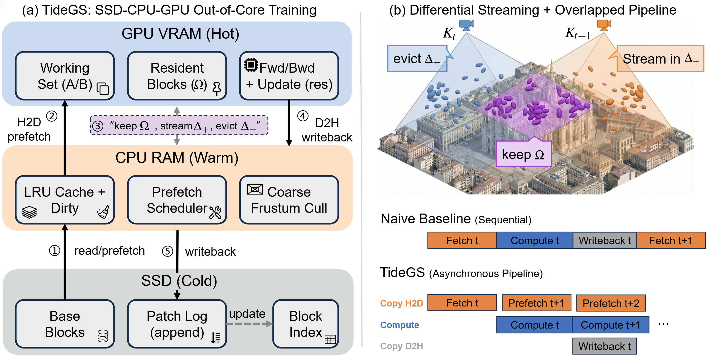
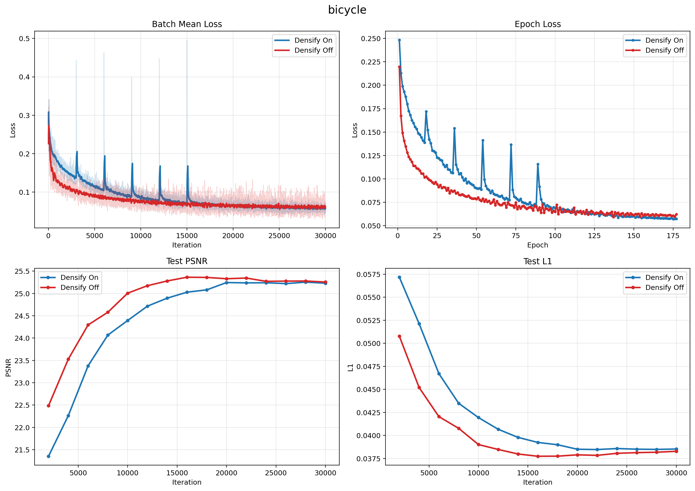
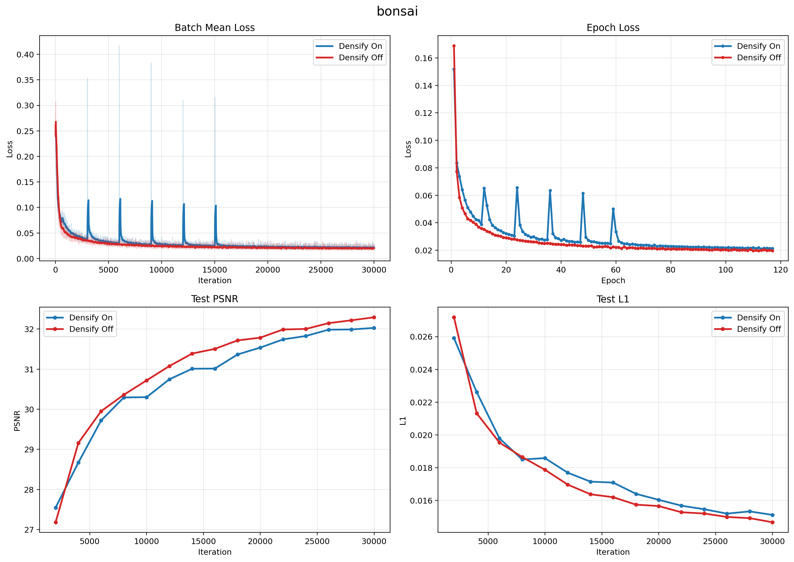
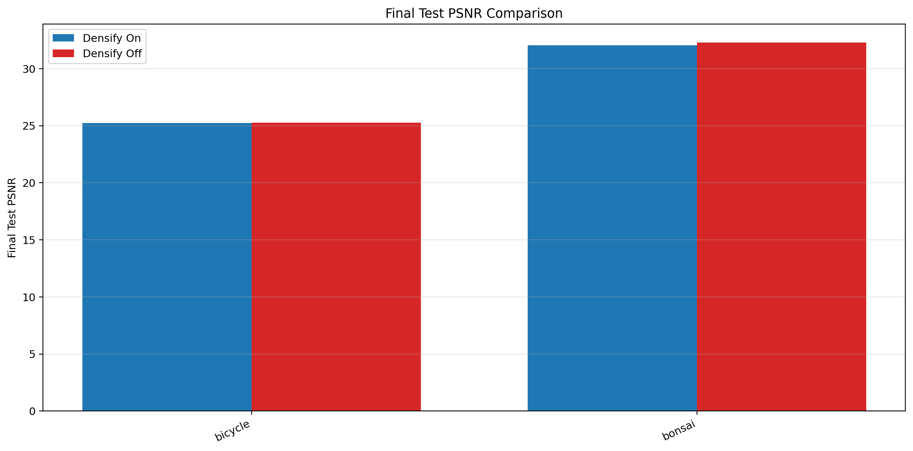
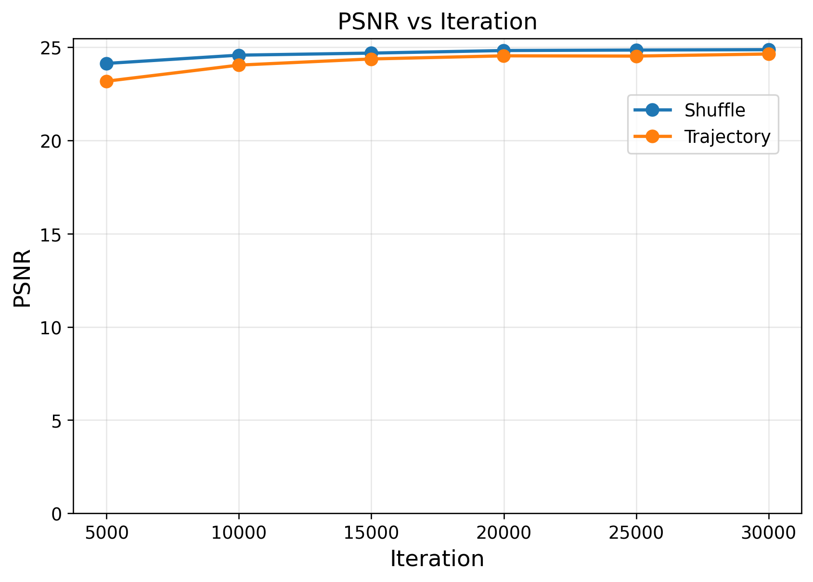
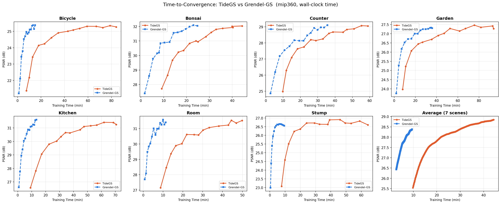
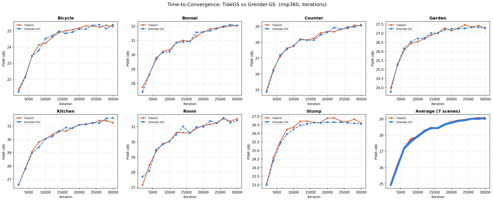

Drag the two split bars to compare TideGS, CLM, and Vanilla 3DGS in one view.
This webpage presents supplementary visualizations for TideGS, including a direct visual quality comparison and a method overview. Replace this paragraph with your paper abstract if you want the website text to match the manuscript exactly.

Method overview for TideGS.





